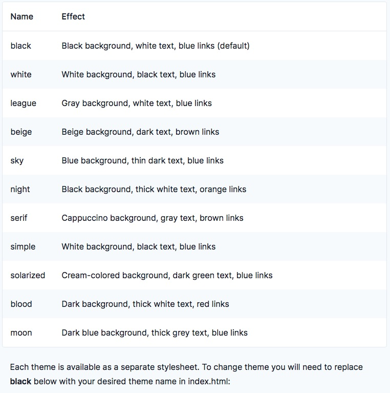

Abigail Temtim
We have been heavily focusing on chart.js and the materials it contains. Week 11 we started shifting focus towards reveal.js where it allows you to create HTML presentation framework.
For assignment 10 The feature I planned to inspect and explain is picking a Theme. The next slide will explain how to implement these using code into your own code.
The resource I used to gain more understanding on how to implement different themes is linked right below. Themes help with setting a tone for your personalnilation of your code, work, art, presentation. It helps to speak what you want others to understand about your work.
If you decide to use a theme that is included, the framework comes a with a vairety!
Themes make things more peronsonalised and it allows you to display your work accordingly.
If you want to create one